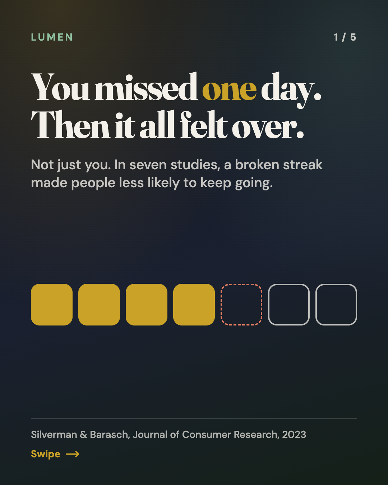
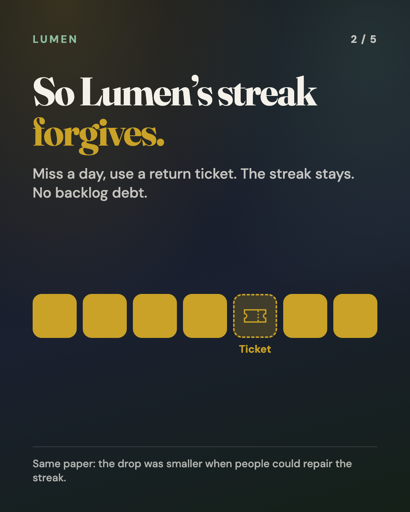
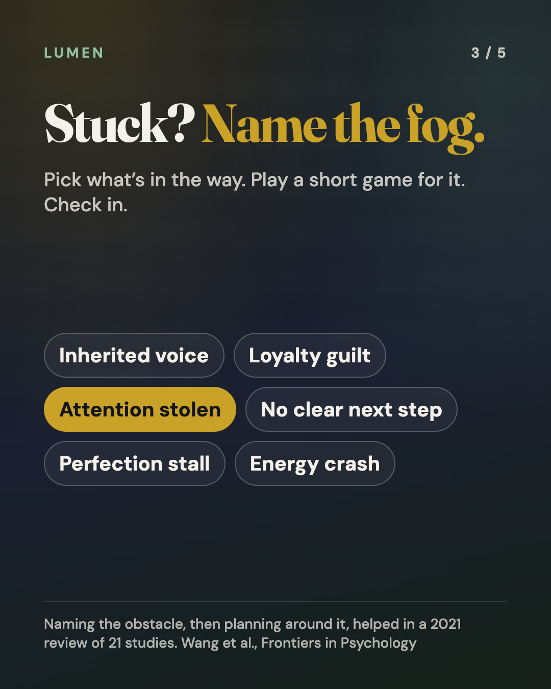
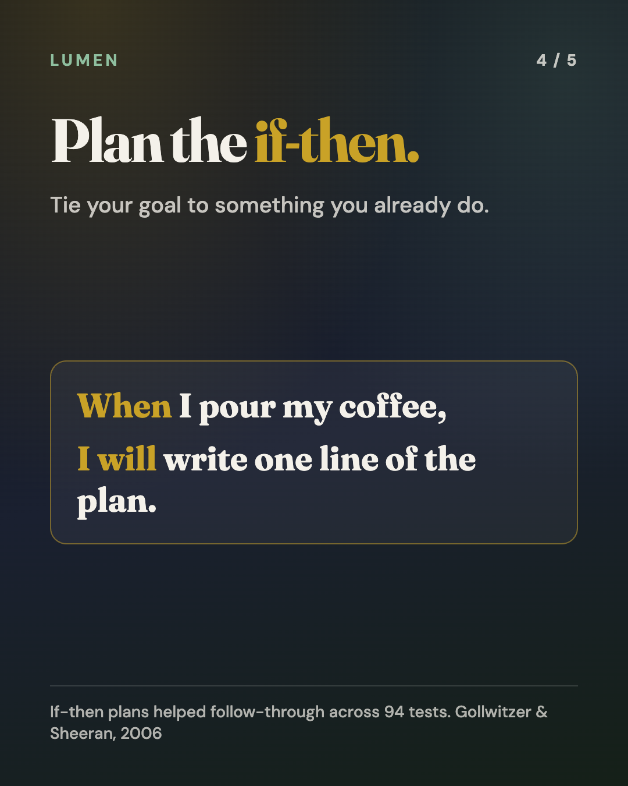
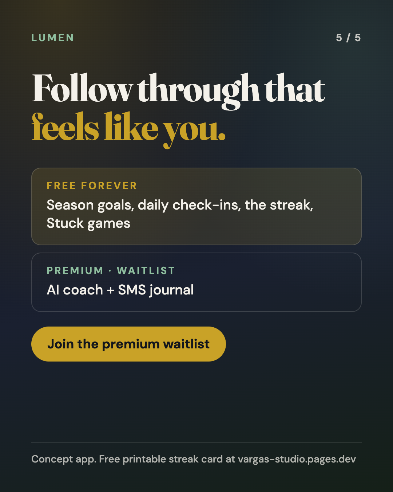

Social pack
Lumen in a picture
One explainer in three sizes, plus a 5-slide carousel about the streak that forgives. Research cited on the slides.
Explainer
Name a season goal → check in daily → stuck? play. Free core, premium on the waitlist.


Carousel · 1080×1350
Hook on the broken streak, then the fix.










Caption
One missed day shouldn’t end a streak. Lumen gives you return tickets, short Stuck games and an if-then plan. Core is free forever. Premium coach: waitlist. Free printable: streak card.
One missed day shouldn’t end a streak. Lumen gives you return tickets, short Stuck games and an if-then plan. Core is free forever. Premium coach: waitlist. Free printable: streak card.
Concept for friends. Lumen isn’t in stores yet.